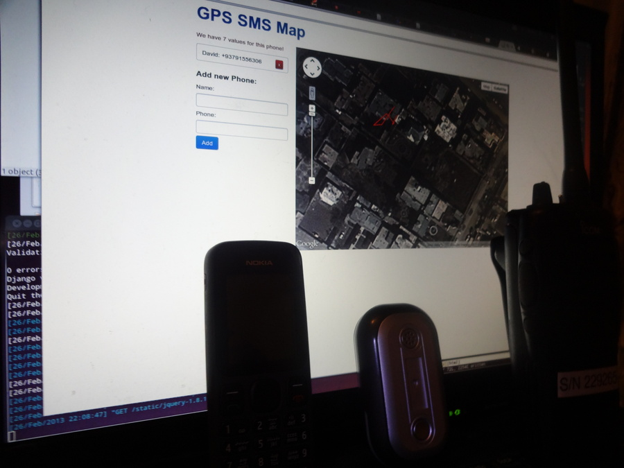
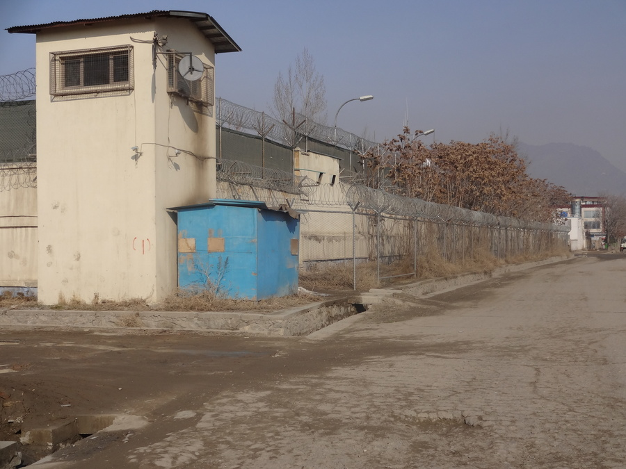
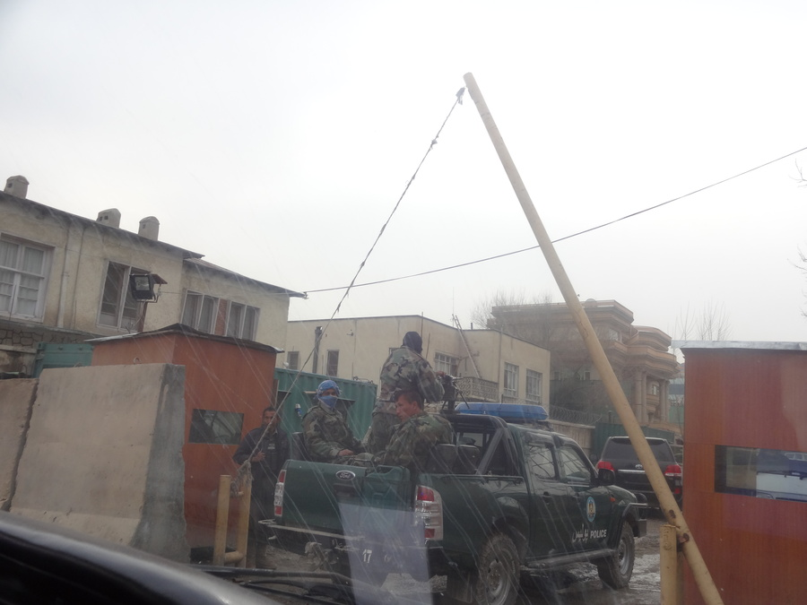

Sicherheit
geschrieben am Tuesday, February 26, 2013
Do sich einigi mol chli um mini Sicherheit Sorge gmacht händ möcht ich chli verzelle wie das mini Organisation so handhabt. zAllererscht müend ihr jedoch wüsse was überhaupt dGfohre sind...
DHauptgfohre do sind eigentlich nid dTaliban. dTaliban grifet ganz offiziell kei Hilfsorganisatione (NGOs) a. Sie würed sich sus i dä Bevölkerig sehr unbeliebt mache, wil dBevölkerig NGOs liebt. Äs git selbst i Taliban Gebiet NGOs wo Spitäler betriebed. Zwei Fraue woni kenne glernt ha händ dött teilwis gschafft. Inächo sinds natürli nur mit Burka.
dHauptgfohre do sind eigentlich Entfüehrige und zur falsche Ziit am falsche Ort zsi. Entfüehrige sind äs typischs arm/rich Problem und chömed do wohrschinli nid soviel meh vor als i anderne dritt Welt Länder. sGföhrliche isch do eigentlich zur falsche Ziit am falsche Ort zsi. Äs cha zum Bispiel passiere das ä selber bauti Bombe losgoht ufere Stross losgoht, wo eigentlich dPolizei hätt sölle treffe aber jetzt halt än Chrankewage verwütscht hed (alles scho passiert).
Äs git au extra ä Hilfsorganisation (gsponseret vo dä Schwizer Eidgenosseschaft :-)) namens ANSO wo die ganz Situation in Afghanistan laufend analysiert und Warnige usegit. Ich han also au scho ä Warnig becho dasi nid söll ines gwüsses Gebiet goh, wil dött grad dä Gheimdienst uf än Suizidbomber gschosse hed...
Mini Organisation selber hed ä paar klari Regle:
- Äs mues immer öpper wüsse wo du bisch. Wenn ich usem Huus wett, denn lütich öpperem a und sägä, dass ich gang was go ichaufe und wie lang ich öppe ha. Wenni wieder dihei bin lüti nomol a zum bestätige dasis gschafft ha. Falls mer denn nid dihei isch wird noch eim gfandet (nogfroget am telefon, sus gsuecht).
- Mir dörfed üs nur imnä bestimmte Gebiet bewege. Wenn mir witer weg wend, müend mir dErlaubnis vom Security-Team hole.
- Jede obig gits än Check-in. Mä mue sich bis am 20:45 gmolde ha, dasmer dihei isch. Dä hani notürli au scho ziemli konsquent verpasst (vergesse). Denn lütets mir a.
- Mir händ immer äs Handy däbi und wenn möglich au sFunkgrät.
Mich dunkts mängisch das die Regle nid unbedingt mir viel Sicherheit bringed, sondern meh dä Organisation. Sie chönd denn sägä, dass sie sich wenigstens um Sicherheit bemüeht händ (dä Mediedruck wär enorm, wenn öpper entführt wür werde). Morn gangi zum Bispiel miteme Mitarbeiter imänä Dorf go ä Satelitealag ufstelle. Für das isch extra bi ANSO nogfrogt worde obd Gegend sicher isch.
Um dSicherheit no chli zerhöhe, bini beuftreit worde än Applikation zzeichne wo GPS Koordinate azeigt. Das heisst zuesätzlich zum Handy und Funkgrät hätt mer denn au no än GPS Tracker däbi:
Handy, GPS-Tracker, Funkgrät und dApplikation im Hintergrund
Dött woni schaffe ischd Sicherheit schinbar au recht wichtig.. Näbäd dä übliche hoche Muure mit Stacheldroht gits ä Türe mit zwei Wächter wo immer nur eini offe isch. Das heisst wenn irgendöpper wett agriffe chunnter gar nid ersch inä durd dTüre wil immer eini verschlosse isch. Ein Wächter nennt dä erscht Ruum "Kill Room", wil är halt als erschte wür drufgoh wenn öpper wür agriffe :-)
Sturmgwehr überall
Mä merkt scho, dass sich do irgendwie niemer so 100% sicher fühlt. Viel richi wos vermöged händ no eigeni Guards (notürlich au mit Sturmgwehr). Gwüssi Usländer gönd gar nid ersch usem Huus, die wärdet vom Fahrer zu ihrer Arbet brocht und gönd z.B. nie uf dä Markt. Di gliche AK-47 Truppe find mer au teilwis vo dä Supermärkt (grössi: chline Coop).
30 Johr Chrieg händ sich i vielne Chöpf feschtbohred. Glichzitig händ aber au die meischte Lüt dä Chrieg eifach nur satt. Leider isch dä Chrieg ersch denn verbi wenn sich alli bewaffnete Truppe zum Friede bekenned.
Än Franzos womer letztens begegnet isch und miteme NGO ä französischi Bäckeri betriebe hed (und näbäd bi no einigi anderi Sache macht), isch wiederholt vom Gheimdienst ufgforderet worde Soldate vor sis Huus zstelle (natürlich dSoldate vom Gheimdienscht, mit Bestechigsgelder). Sie händ än denn so lang beläschtiget biser dBäckerei gschlosse hed und amnä andere Ort wieder chliner ufgmacht hed. Er hed nur gmeint "spinnts denn dene, jetzt hämmer immer die Problem ka mit Waffe und jetzt söll är Soldate vor sini Türe stelle?"
So gsehnd chlini Polizeistatione so us:
Do i üsem Quartier au sus einigi hochi Tier läbäd fahred ab und zue Konvois durä. Näbäd dä Sprochschuel wohnt zum Bispiel dä Chef vom afghanische Parlament. Ha mi chum getraut Photene zmache, sie händ mi recht bös aglueget :-) Sind jedefalls 4 bis ufd Zäh bewaffneti Wägä gsi und 2 Ami-Schlitte i dä mitti.
Immer no chalt
Mir gohts eigentlich ganz guet. Bi sehr fliessig am dSproch lerne, was eigentlich au recht guet klapped und Spass macht. Dari isch extrem liecht. Git fasch kei usnahme und nur 3 Ziitforme. Ha am obig agfange teilwis mini Chleidigsschichte zerhöhe (Ruumtemperatur ~-2-8°). sMaximum isch so 7 Schichte (termowäsch, shirt, hemd, 3 pullover und ä jacke). So hocki denn teilwis vorem PC, mit 2 Wulledeckene über dä Scheiche. :-)
Ich chönnt scho heize, aber äs fühlt sich so verschwenderisch a wenn noch 2 min nid heize scho wieder di ganz Chälti usem Huus use isch. Schinbar baueds kei Isolation i wils nid wüssed wie mer das macht. Tür wärs jo nid :-)
Am obig ischs teilwis chli einsam. Git kei Möglichkeit irgendöpper ztreffe oder mit öpperem zrede. Drum heds wohrschinli au fasch kei Singles do wo langfrischtig blibed. Mitärä Familie chamer do aber eigentlich recht gmüetlich läbä.
Freu mi uf eui Kommentär :-)